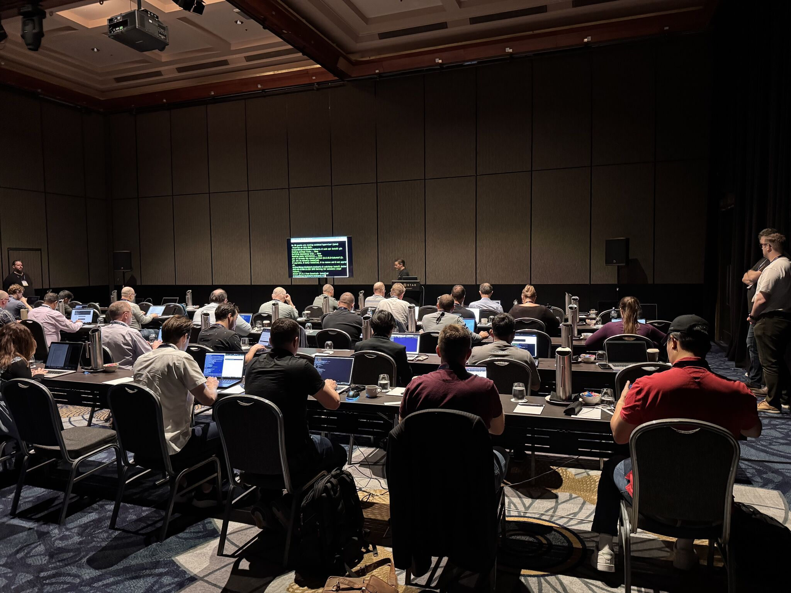

Practical, hands-on MISP training that gives your team the skills and confidence to use MISP for real-world threat intelligence and information sharing.
MISP gives threat intelligence teams a powerful way to store, correlate and share intelligence. But the platform is only useful when your team knows how to use it well.
Our MISP training is practical and hands-on. Your team works through lab scenarios based on real-world use cases, building the skills they need to use MISP in their day-to-day work.
We run our courses live and online, in your team’s timezone, and the people teaching them know MISP from experience. Cosive contributes code to the open-source MISP project and runs MISP in production for organisations around the world. We bring that experience into the training, helping your team understand both how MISP works and how to use it effectively.
By the end of the course, MISP felt much less daunting. When we went back to work, we had a much clearer idea of where to start, how to get our intelligence into the platform and how we could use it as a team. Having already worked through those steps in the labs gave us the confidence to keep going on our own.
Getting value from MISP depends on the people using it. Whether your team is new to MISP or already has an instance running, this training builds the practical skills to use it more confidently in day-to-day threat intelligence work.
Nobody on the team has used MISP before.
Your team can navigate MISP and handle common day-to-day tasks with confidence.
One person knows how MISP works, and everyone else relies on them.
More of your team can work independently in MISP, reducing reliance on one person.
MISP is running, but mostly being used to store indicators.
Your team can use more of MISP’s capabilities to analyse, enrich and share threat intelligence.

Facilitated by some of the world’s foremost CTI experts.
MISP Kickstart is our practical introduction to MISP. Over two half-days, live and online, your team sets up, configures and uses MISP — taught by CTI practitioners who contribute to the MISP project.
Rather than working through theory, attendees run lab scenarios based on real-world use cases: MISP setup and configuration, getting threat data in and enriching it, analysis and correlation, feeds, automation, sharing communities, and threat intelligence sharing.
By the end, every attendee has built a working MISP instance, has practical experience using it, and has the foundation to apply MISP to your organisation’s threat intelligence requirements. Everyone keeps the course materials, the practical exercises and the supporting resources, and receives a certificate of completion.
You’ll understand its background, functions, and its role in Cyber Threat Intelligence (CTI) sharing. Additionally, you’ll be primed on CTI sharing fundamentals.
This module walks you through the process of downloading and importing the MISP Appliance, and logging in for the first time.
This module introduces MISP terminology and guides you through setting up your organisation, including a hands-on lab for configuring the primary organisation.
This module provides a comprehensive understanding of threat data ingestion in MISP, emphasising practical skills in data enrichment.
This module focuses on enhancing your proficiency in analysing threat data, providing practical insights into identifying patterns, mitigating false positives, leveraging MISP Sightings, and utilising MISP for in-depth malware analysis.
You’ll gain practical experience in configuring sharing settings, defining access levels, and participating in collaborative threat intelligence efforts.
In Module 7, we will conduct a comprehensive review of key concepts covered throughout the course, reinforcing your understanding of critical elements.
Two half-days won’t make anyone a MISP expert. They will give your team practical experience with the core workflows they need to start using MISP more effectively in their day-to-day threat intelligence work.
Install, configure and upgrade a MISP instance, and manage organisations, users and permissions.
Add intelligence manually, configure threat feeds and custom feeds, and enrich it using the sources available to your team.
Correlate events, manage false positives, record sightings, and use MISP to support malware analysis.
Sharing groups and communities, distribution levels, and where STIX/TAXII fits.
The course runs over two half-days, with eight hours of live, instructor-led training in total. We run it online in your team’s timezone.
Splitting the course across two days also gives attendees time to explore the MISP instance they set up on day one before moving into feeds, enrichment and sharing on day two.
Most of our MISP training is private, with courses run for one organisation at a time. Rather than asking your team to fit around a fixed public training calendar, we arrange the course around your availability.
Get in touch and we can work with you to find suitable dates.
Yes. Every attendee receives a certificate of completion.
They also keep the course materials, practical exercises and supporting resources, so they can revisit the labs and use them as a reference after the course.
The course includes eight hours of instructor-led training. We can provide documentation confirming attendance and training hours to support a CPE claim.
Cosive is not an accredited CPE provider, so you’ll need to check with your certification body to confirm whether the training is eligible for CPE credits.
Yes, in some circumstances. We consider discounted pricing for students, non-profits and community CERTs on a case-by-case basis.
Cosive contributes code to the open-source MISP project and supports the broader threat intelligence community through training and knowledge sharing. If cost is a barrier to attending, get in touch and tell us a little about your situation.
Tell us about your team and we’ll come back with a quote.
By the end of the course, MISP felt much less daunting. When we went back to work, we had a much clearer idea of where to start, how to get our intelligence into the platform and how we could use it as a team. Having already worked through those steps in the labs gave us the confidence to keep going on our own.